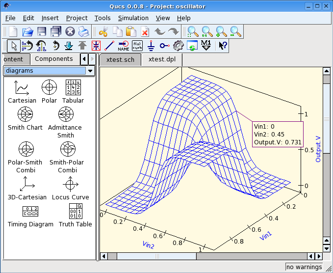

Screenshots of schematic and data display areas
The screenshots below show the main schematic and data display area of the Qucs GUI on the lower right corner, the menus and icons at the upper part and the project/contents/component/action/diagram selection on the left hand side.
Simple filter in qucs-qt4
Combined schematic and data visualisation.
Simple schematic area.
Data display with different kinds of data representations (diagrams) and data markers.

Data display with 3D diagram.
Data display with 3D diagram.